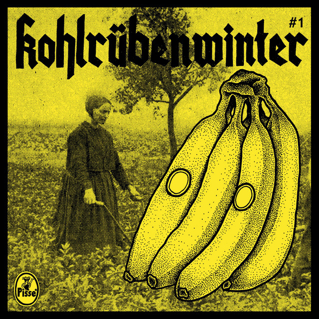

You want an annual pass Du willst eine Jahreskarte You want a ring on your finger Du willst einen Ring am Finger A rubber hand in yours Eine Gummihand in deiner Chained and forever Festgekettet und für immer But I want to be your bike saddle Aber ich will dein Fahrradsattel sein But I want to be your bike saddle Aber ich will dein Fahrradsattel sein But I want to be your bike saddle Aber ich will dein Fahrradsattel sein But I want to be your bike saddle Aber ich will dein Fahrradsattel sein But I want to be your bike saddle Aber ich will dein Fahrradsattel sein But I want to be your bike saddle Aber ich will dein Fahrradsattel sein But I want to be your bike saddle Aber ich will dein Fahrradsattel sein But I want to be your bike saddle Aber ich will dein Fahrradsattel sein